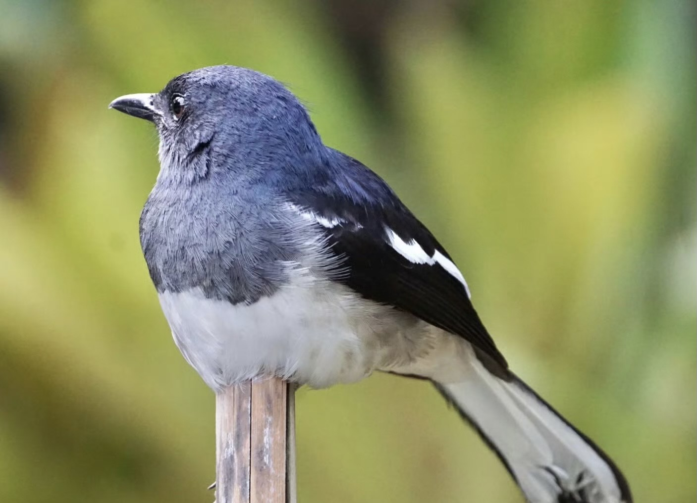
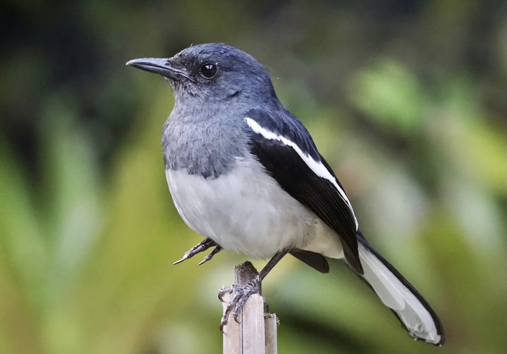

 
鹊鸲是雀形目鹟科鹊鸲属鸟类，俗称四喜、猪屎渣。
雄鸟整个头部和上体呈具蓝色金属光泽的黑色；翼黑褐色，翼上小覆羽、中覆羽、次级覆羽和内侧次级飞羽外翈均为白色，使得翼上形成一道明显的白色翼斑；中央尾羽黑色，外侧尾羽白色，尾基部具有黑斑；下体颏、喉、颊、颈侧至上胸均为和头部一样的亮蓝黑色，下胸、腹至尾下覆羽白色；虹膜褐色，喙黑色，脚黑褐色。雌鸟和雄鸟相似，但雌鸟上体偏暗灰褐色，下体白色部分泛棕灰色。
鹊鸲分布于亚洲东部，在中国主要集中在长江流域及其以南地区。栖息于低山丘陵至山脚平原的林缘、疏林、竹林和果园等地。主食甲虫、蝼蛄、蟋蟀、蚂蚊、蜂和蝇等多种昆虫，也吃蜘蛛、蜈蚣、螺、蛙等小动物，以及少量植物种实。性活泼，较大胆，好争斗。常单独或成对活动，休息时常展翅翘尾，鸣声悠扬多变。繁殖期在4—7月，营巢于树洞、檐缝等洞隙中。窝卵数4—6枚，卵绿褐色且密布茶褐色斑点；雌雄亲鸟共同孵卵和育雏，孵化期约13天，雏鸟晚成。
鹊鸲不太怕人，容易驯养。鸣声清脆嘹亮、婉转动听，它是中国南方常见的一种观赏鸟。人们饲养这种鸟，除了听鸣声以外，有时是为了当作斗鸟使用。